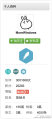
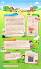

转发了华尔街日报中文网 的微博：【深度：中国中小企业融资难问题依然无解】- 为应对温州地下银行系统崩溃的危机，中国政府曾推出一项改善中小企业融资难问题的大胆改革方案，但数年之后，对大多数企业和消费者来说，实际情况几乎没有发生什么变化。http://t.cn/RUBKkjo http://t.cn/RUBKkle
的微博：【深度：中国中小企业融资难问题依然无解】- 为应对温州地下银行系统崩溃的危机，中国政府曾推出一项改善中小企业融资难问题的大胆改革方案，但数年之后，对大多数企业和消费者来说，实际情况几乎没有发生什么变化。http://t.cn/RUBKkjo http://t.cn/RUBKkle
转发理由：很正常，规避风险是资本的天然属性。
只有对生活真正的热爱，才会有勇气去克服一切困难！

个人博客（http://t.cn/zOUJyDL）访问量突破300万了，谢谢大家的支持！

转发了果壳网 的微博：【大概是最萌的羊：瓦莱黑鼻羊】动画里最萌的羊是哪一种？小羊肖恩大概能压喜洋洋一头。那么在真实世界里，是否也存在着这样一种黑脸黑脚白毛毛的羊？还真有。在山的那边海的那边有一种瓦莱黑鼻羊，我擦勒，怎么能这么萌：http://t.cn/zjg9oGd
的微博：【大概是最萌的羊：瓦莱黑鼻羊】动画里最萌的羊是哪一种？小羊肖恩大概能压喜洋洋一头。那么在真实世界里，是否也存在着这样一种黑脸黑脚白毛毛的羊？还真有。在山的那边海的那边有一种瓦莱黑鼻羊，我擦勒，怎么能这么萌：http://t.cn/zjg9oGd
转发理由：//@果壳网:提醒一下，链接内有视频，咩咩叫着更萌哟~
#万能的大熊的红包#抢红包图的就是个吉利！[发红包]我在万能的大熊 的粉丝红包中抽到了@快的打车 提供的“快的打车6元红包”，你也快来试试手气！http://t.cn/RZeaGsH
#龚文祥的红包#挣钱是一种能力，抢红包拼的是技术。我抢到了龚文祥 和@支付宝钱包 一起发出的现金红包，幸福感爆棚！你也来试试手气吧~╮ (￣ 3￣) ╭http://t.cn/RZexNkx
转发了伯乐在线官方微博 的微博：《给 Git 中级用户的 25 个小贴士》作为一个很享受git的人，我想要分享从各种社区学到的实用经验，让大家不需要花费过多的功夫就能找到答案。http://t.cn/RZFPvLE （@木虫草 译，欢迎加入伯乐在线翻译组：http://t.cn/8kFLb0v）
的微博：《给 Git 中级用户的 25 个小贴士》作为一个很享受git的人，我想要分享从各种社区学到的实用经验，让大家不需要花费过多的功夫就能找到答案。http://t.cn/RZFPvLE （@木虫草 译，欢迎加入伯乐在线翻译组：http://t.cn/8kFLb0v）
转发理由：这个实用，转发一下。
欢迎各位报名参加2015微软社区大课堂 Community Camp。详情 & 报名地址： http://t.cn/Rz1um0a 课堂地点在北京市东城区王府井天伦王朝酒店，免费听课还包午餐。果断行动吧。@微软中国MVP项目组

 //
//转发了的微博：抱歉，此微博已被作者删除。查看帮助：http://t.cn/zWSudZc
转发理由：转发微博